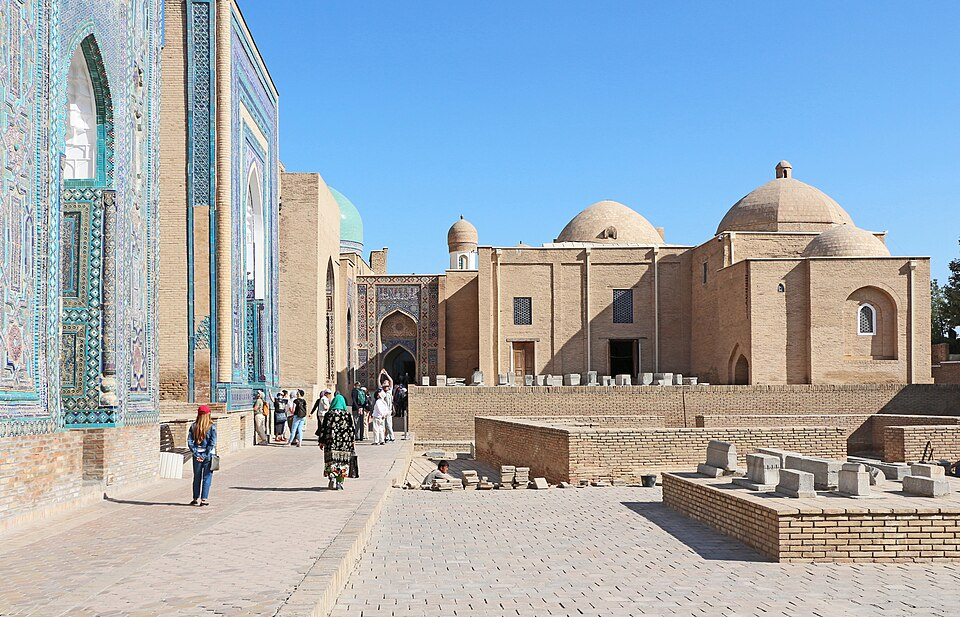

Ориентир
Шахи-Зинда
Улица мавзолеев, которая поднимается по склону городища Афрасиаб. Большая часть гробниц построена в XIV и XV веках, стены покрыты глазурованной плиткой.
- Город
- Самарканд
- Построен
- XI–XIX века
- Что это
- улица мавзолеев
- Координаты
- 39.6625, 66.9878